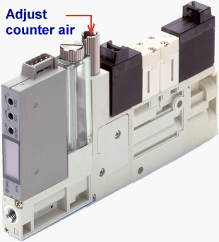

Service History
Subject: Intel(M) NS-7000 Input Hand B device drop to open area between Hot plate 1 & 2
Handler Model: NS-7000 (S/N: 18606)
Controller: RC520
Date: 22 Oct 2009
Symptom
When input Hand A & C purge device to HotPlate2 last row(that is below HotPlate 1), Hand B device drop to open area between Hot plate 1 & 2, skip start to continue.
Same issue of Hand B device drop to open area between Hot plate 1 & 2, skip start to continue.
For Hotplate1, at the last row Hand B also drop device outside Hotplate1 when Hand A&C purge device to release to Hotplate1 last row.
Therefore, Hotplate 1 will have 3 missing devices at 1st row and 3 missing at last row.
Action
Replaced vacuum unit and counter-air unit for Input Hand B, running check at Hotmode.
When input Hand A & C purge device to HotPlate2 last row, Hand B device drop to open area between Hot plate 1 & 2, skip start to continue.
Same issue of Hand B device drop to open area between Hot plate 1 & 2, skip start to continue.
For Hotplate1, at the last row Hand B also drop device outside Hotplate1 when Hand A&C purge device to release to Hotplate1 last row.
Therefore, Hotplate 1 will have 3 missing devices at 1st row and 3 missing at last row.
No time for further check of this issue, as customer want to run open/short test(Bin 10) of devices for 1 tray where no single Bin10 is allowed.
Temporarily unplug the counter-air electrical connector from Hand B counter air unit.
First round Bin 10 check fail.
2nd round Bin 10 fail bcos one device fail.
Customer key in latest force per pin, Bin 10 test pass.
Misplacement check at Unloader 1, 2, 3, found purge air too strong for Output Hand A, B, C and D.
Reduce counter air (purge air) volume for output Hand A,B, C and D, placement at Unloader 1 ok.

Device pickup error for Hand A at output shuttle 1, output Hand A seem higher.
Perform Auto hand Height Cal afew times and ok.
Placement check for Unloader 1, 2, 3.
Individual Input Hand vacuum and purge air check in MMI I/O Monitor for Input Hands.
- problem solved for Input Hand B device drop to open area between Hot plate 1 & 2 due to loose wrong connections(such as to I/O modules or Counter-Air unit for Input Hand B)
Running check at Hot mode 40DegC for 3 times.
Cause
-The actual cause of the Input Hand B device drop to open area between Hot plate 1 & 2 is because wrongly plug the connectors for Counter-Air unit for Hand B & C Individual Input Hand vacuum and purge air check in MMI I/O Monitor for Input Hands.
------------------------------------------------------------------------------------------------------------------------------
Symptom:
Test site: 80mm x 60mm
Ambient mode, pickup at loader one by one, place device on input shuttle is 4 devices at one time.
Hotplate pocket is 11 row x 6 col.
Hotplate X-pitch: 20mm
Hotplate Y-pitch: 30mm
Place 4 devices at the same time at hotplate.
When input Hand A & C purge device to HotPlate2 last row(from operator left), Hand B device drop to open area between Hot plate 1 & 2, skip start to continue.
Same issue of Hand B device drop to open area between Hot plate 1 & 2, skip start to continue.
Same issue of Hand B device drop to open area between Hot plate 1 & 2, skip start to continue.
For Hotplate1, at the last row Hand B also drop device outside Hotplate1 when Hand A&C purge device to release to Hotplate1 last row.
Therefore, Hotplate 1 will have 3 missing devices at 1st row and 3 missing at last row.
So purging of device seem to be the problem.
Remedy:
- activate vacuum on Input Hand A, B, C and D with devices.
- activate counter-air on Input Hand A, device drop from Hand A, ok.
- activate counter-air on Input Hand B, device drop from Hand C instead.
- activate counter-air on Input Hand C, device drop from Hand B instead.
- swap counter-air connectors for Hand B & C.
- activate counter air on Input Hand B, device drop from Hand B.
- activate counter air on Input Hand C, device drop from Hand C.
Actual cause of the Input Hand B device drop to open area between Hot plate 1 & 2 is because wrong connections of connectors for Counter-Air unit for Hand B & C.